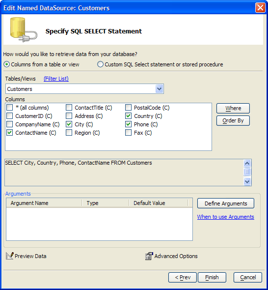

Columns from a Table or View
This approach to defining a SQL SELECT statement requires less knowledge of SQL.
Select the Columns from a table or view radio button.
By default the Tables/Views list displays only standard tables and views.
Optionally, click Filter List to display the Filter Table/View List dialog.
Place checks next to the types of data sources that you would like to view. These include:
Views
Linked Tables
Synonyms
Aliases
System Tables
Click OK to continue.
Select a table or view from the Tables/Views list.
Place checks next to the columns you would like to include in your report.
 Note : At any time
you can switch to defining the SQL directly by clicking the Custom
SQL Select statement or stored procedure radio button.
Note : At any time
you can switch to defining the SQL directly by clicking the Custom
SQL Select statement or stored procedure radio button.

If you would like to use an argument in a WHERE or ORDER BY clause of the SELECT statement, click Define Arguments to display the <span class=Screen>Define/Edit Arguments</span> dialog box.
Optionally, click Where to filter the records that you will retrieve with a WHERE clause in the SQL SELECT statement. Refer to Creating a WHERE Clause.
Optionally, click Order By to sequence the records that you will retrieve with an ORDER BY clause in the SQL SELECT statement. Refer to Creating an ORDER BY Clause.
Optionally, click Preview Data to see the data that the SELECT statement will retrieve.
Optionally, click Advanced Options to define how the imported data will be mapped into fields in an Alpha Anywhere table. This dialog allows you to change data types and field lengths.
Click Finish to begin to display the <span class=Screen>Design Time Properties</span> dialog box.
See Also